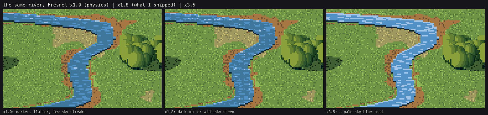
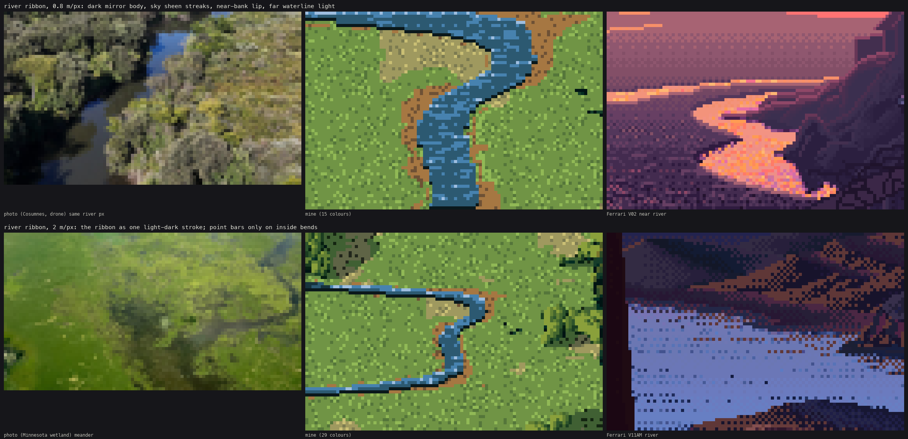

How-to 3: Water as a dark mirror, and the coast by depth
Back to the field guide. Code: ~/work/pixelart-studies/aerial/lib/tech_water.py, water_ramp in lib/pal.py. Studies: studies/river.png, studies/coast.png.
1. What the photos say
The Cosumnes River drone photo has the same river running from under the drone to the horizon, and it settles the question:
- Seen steeply from above, a river is darker than everything around it. L* 23, almost colourless (C* 3), against canopy at 53 and a sunny field at 68.
- Toward grazing angles it turns into sky. L* 45, C* 32, sky blue.
- The far bank's trees hang down into the water as a dark band.
- The near bank has a dark lip. At grazing angles, the far waterline has a light line.
- Flow shows as sparse streaks along the current.
Physics agrees: Fresnel reflectance is 2–5% looking 30–40° down, and 15–20% at 10–15°. The sky is only visible in water when you look across it.
Ferrari, seen from high up (V02), makes water the lightest thing on the land: sky colours in flat bands with checker seams, and a dark 1-px line on each bank. Those two disagree for a steep camera. So you choose a stylisation on purpose and say which one you chose.
2. The ramp is the sky, not an albedo
Water has no colour of its own to light. Its ramp is built from the light state's sky colours and a dark body (pal.water_ramp):
0 shaded bank lip | 1 reflection of land/trees | 2 water body | 3 low-sky sheen | 4 bright sky (grazing) | 5 glint
t, h = light.sky_top, light.sky_hor
b = np.array(body, float) * 0.7 + t * 0.28 # body between the measured tarn (L*46) and steep river (L*23)
cols = [b * 0.45, b * 0.8 + t * 0.05, b * 0.85 + t * 0.25, b * 0.45 + t * 0.6, b * 0.15 + h * 0.9, sun * 0.3 + 255 * 0.7]
Because the ramp is the sky, the evening river is lit pink and violet with no extra code. That's the thread of light down the valley in the evening range plate.
3. Trace the reflected ray
For every water pixel, mirror the view ray and march it through the terrain plus the canopy (so trees show up in the mirror). If it hits land, the pixel is step 1. If it hits sky, it goes from the body to bright sky by the Fresnel term, brighter toward the horizon, posterised in flat bands with narrow dithered seams:
R = D.copy(); R[:, 2] = -R[:, 2]
P = np.c_[G["x"][ys, xs], G["y"][ys, xs], G["z"][ys, xs] + 0.3]
t = Trefl.raymarch(P[None], R[None], t0=0.5, t1=3000)[0]
land = np.isfinite(t)
el = np.arcsin(np.clip(R[:, 2], 0, 1)) # sky elevation seen in the mirror
F = np.clip(fresnel(R[:, 2]) * WATER_BOOST, 0, 1)
skyb = 0.55 + 0.45 * (1 - el / (np.pi / 2))
x = 2.0 + np.clip(F * skyb * 5.0, 0, 2.2)
s = np.clip(np.where(land, 1, flat_bands(x, thr, 0.25)), 1, 4)
WATER_BOOST is the stylisation. Here is the same river at three values:

code/figs.py water. ×1.0 is the physics: darker and flatter, with few sky streaks. ×1.8 is what I shipped: a dark mirror with sky sheen, which is what the Cosumnes photo shows. ×3.5 turns it into a pale blue road, Ferrari's high-view water but a lie for a 30° camera. (I began at ×2.5. The docstring in tech_water.py still says so.)
4. The marks
near_lip = mask & ~below; step[near_lip] = 0 # lowest water row: under the near bank
far_edge = mask & ~above; step[fe] = np.minimum(step[fe] + 1, 4) # top row: light line at the far waterline
seeds = mask & (thr_b < 0.015 + 0.05 * flow) & (step >= 1) & (step <= 3)
# ... each seed starts a 2-5 px horizontal streak one step lighter
glint = mask & (D @ [sun_x, sun_y, -sun_z] > 0.985) & (thr_b < 0.5) # the sun mirrored to the camera
And the banks, which belong to the subject rather than the painter, but you can't do without them:
- a 1.5 px strip of bare soil along the channel, the cut bank, or the water sits on the grass like a sticker;
- gravel point bars only on the inside of bends, from the sign of the channel's curvature:
curv = np.gradient(slope, cell) # slope = d(centreline x)/dy
inside = np.sign(X - rx[:, None]) == -np.sign(curv[:, None])

The river study: at 0.8 m/px beside the Cosumnes photo at the same river width and Ferrari's V02, and at 2 m/px beside a Minnesota meander and V11AM.
Aim the camera at the water. My first river study missed the river entirely: the meander wasn't at the valley centre on that row. Put the target on the river: xs = np.nonzero(np.isfinite(level[row]))[0]; tx = xs.mean() * cell.
5. The coast: zoned by depth
The drone photos of beaches (Ocean Coast, Costa Brava, Lisbon) show the sea zoned by depth, not by distance from shore: turquoise over sand where it's shallow, dark over rock and kelp, deep blue beyond. Surf is broken white lines along the depth contours.
depth = level - T0.sample(T0.H, G["x"], G["y"])
x = np.clip(3.4 - depth / 1.1, 0, 3.4) # shallow ramp, 0-4 m, flat bands
cv.fill(sea & (depth < 4.2), "shallow", np.clip(flat_bands(x, thr4, 0.3), 0, 3))
Surf: at each of three depths (0.6, 1.4 and 2.4 m) draw a thin crest where the depth crosses it, broken by noise. Landward of each crest, draw a lace of foam whose density falls off as (1 − d)². Darken the pixel below each crest by one step (the trough).
dd = depth - dz - 0.12 * np.sin(G["x"] / 11.0 + t + 1.7 * k) # < 0 landward of the crest
crest = sea & on & (np.abs(dd) < 0.035 + 0.01 * k)
lace_d = np.clip(1 + dd / (0.35 + 0.1 * k), 0, 1) * (dd < 0)
lace = sea & on & ~crest & (thr < lace_d ** 2 * 0.7)
My first surf used 0.2 m-wide bands and came out as fat white worms (notebook 086). The thin crest plus lace (087) is what breaking water looks like from above. At the shore, the swash is a white edge on the water line, and the wet sand is a darker band just above it.

The coast plate. The depth zones, surf lines and headlands read. The deep water is one flat colour with sparse glints, which is flatter than either the photo or Ferrari (who bands it).